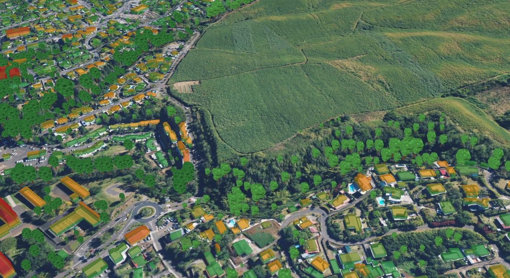
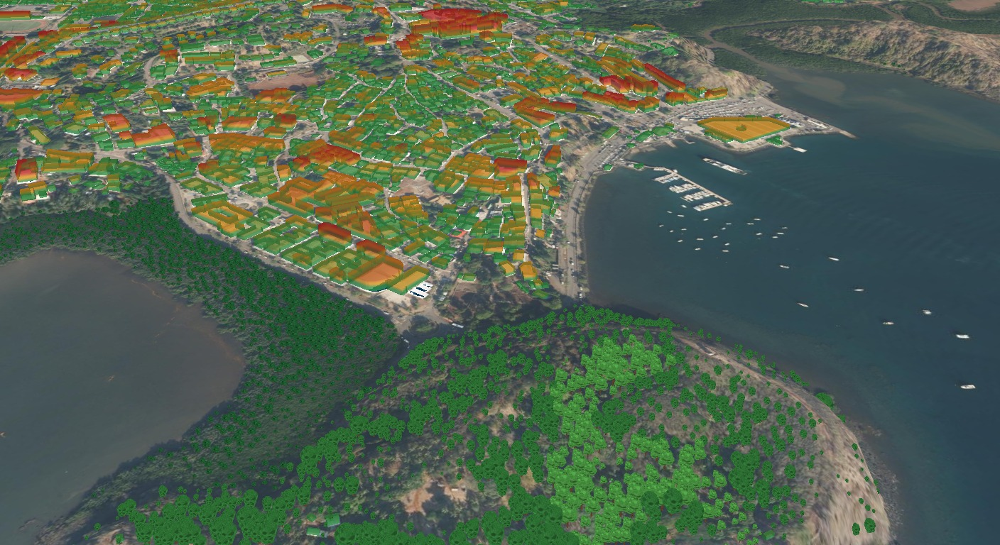

Une réplique numérique vivante de votre territoire, pour simuler, anticiper et décider avant d'agir sur le terrain.
Un jumeau numérique assemble vos données SIG, topographiques, réseaux et capteurs dans un modèle 2D/3D unique, mis à jour en continu.
Élus et techniciens visualisent l'existant, testent des scénarios (crue, urbanisation, travaux) et mesurent leur impact avant toute décision.
Exemples ci-contre et plus bas : maquettes 3D du Tampon (La Réunion) et de Mayotte, avec bâtiments, végétation et relief.

Un jumeau numérique n'est pas une simple maquette 3D : c'est un outil d'aide à la décision, relié à des données réelles et tenu à jour.

Décrivez votre besoin, nous définissons ensemble un périmètre réaliste et progressif. Devis sous 48 h.